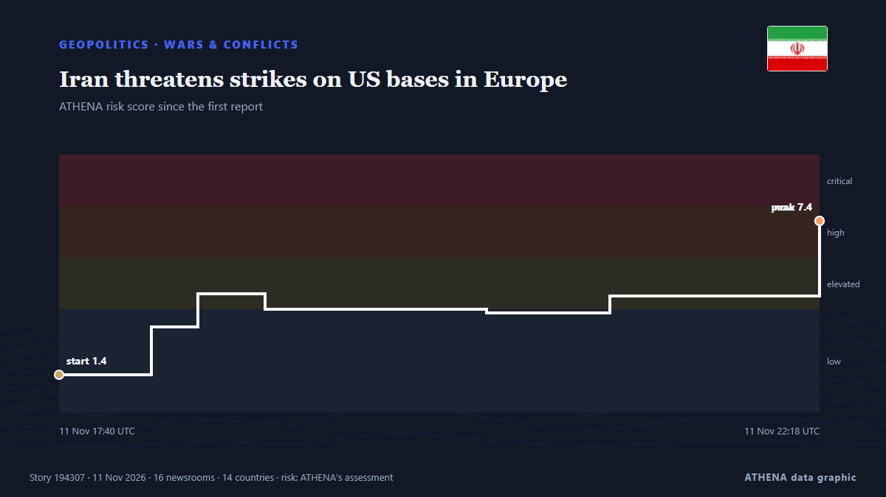

Guerres et conflits
SponsoriséPrésenté par  Cybernetics and Artificial Intelligence Lab Welcome to the Cybernetics and Artificial Intelligence Laboratory, established at the Department of Business Administration of the National and Kapodistrian University of Athens. The lab is headed by Professor Dimitrios Thomakos. The lab aims to do research that can be published in top venues. Our research uses tools and methods of Artificial Intelligence, and lies in the following areas: - Forecasting - Decision making - Cyber security - Finance We are always looking forward to collaborating with exceptional students!
Cybernetics and Artificial Intelligence Lab Welcome to the Cybernetics and Artificial Intelligence Laboratory, established at the Department of Business Administration of the National and Kapodistrian University of Athens. The lab is headed by Professor Dimitrios Thomakos. The lab aims to do research that can be published in top venues. Our research uses tools and methods of Artificial Intelligence, and lies in the following areas: - Forecasting - Decision making - Cyber security - Finance We are always looking forward to collaborating with exceptional students!
| 30 oct. | 0 |
|---|---|
| 31 oct. | 0 |
| 1 nov. | 0 |
| 2 nov. | 1 |
| 3 nov. | 0 |
| 4 nov. | 0 |
| 5 nov. | 0 |
| 6 nov. | 3 |
| 7 nov. | 2 |
| 8 nov. | 8 |
| 9 nov. | 3 |
| 10 nov. | 5 |
| 11 nov. | 2 |
| 12 nov. | 0 |
Les titres sont affichés en anglais, tels que publiés.

Iran threatens strikes on US bases in Europe
Iranian security chief Mohsen Rezaei has threatened to strike US bases beyond the Middle East, including in Europe, if they are used for attacks against the Islamic republic. de RTÉ News
US Offers Up to $20 Million Reward for Information on Iran’s Nuclear Program
WASHINGTON, Nov 7: The United States has announced a reward of up to $20 million, along with possible relocation, for information about Iran’s nuclear program, including its facili... de Arab Times
NATO jets scrambled twice after suspected drone incursions into Lithuania
Air alerts disrupt flights at two airports as officials report that at least one drone crossed Lithuanian airspace before entering Latvia. de TRT World
Iran's IRGC unveils 'new' underground ‘missile city’ amid war tensions
Iran’s Islamic Revolutionary Guard Corps (IRGC) has unveiled what it describes as a "new" underground “missile city,” displaying ballistic and cruise missiles alongside their launch systems. de Gulf News
Congo court sentences 66 soldiers to death for cowardice, mutiny
A military court in the Democratic Republic of Congo has sentenced 66 soldiers to death for cowardice and mutiny after they allegedly fled fighting with rebels. de CBS News (World)
Black Sea Security Is European Security, European Commission President Ursula von der Leyen Says in Varna
The trip comes after at least seven commercial vessels were reportedly struck by drones that many have linked to Russia. de Politico Europe
Most Americans want new Democratic Congress to end Trump’s Iran war
Majorities of Americans want the newly elected Democratic-majority US Congress to act to end the war with Iran and to repeal tariffs put in place by President Donald Trump, signaling demand for quick… de Cyprus Mail
EU Extends Ukraine Military Training Mission to 2028 With Nearly €300M in Funding
European Union (EU) member states agreed on Monday, Nov. de Kyiv Post
Vanishing vessels and missing sailors: The Iran war's human cost at sea
UN confirms 130 'incidents', mainly attacks, in region since US-Iran conflict began, with at least 25 seafarers killed. de Express Tribune
Trump says Iran war ‘effectively over’ militarily, but US ready to strike again
US President Donald Trump said Monday the war with Iran was effectively over militarily but warned US forces remained “locked and loaded,” while Iran's security chief denied reports of talks with… de Iran International (English)
US seeing 'strong inclination' Ukraine war to end - Trump
US President Donald Trump has said that Washington was seeing a "very strong inclination" towards ending Russia's war in Ukraine and that both sides were "tired of fighting." de RTÉ News
Four Killed in Gaza after Sand Embankment Collapses on to Tents
Torrential rain in Gaza caused a sand embankment to collapse on to tents, killing a woman and three small children in an incident that highlighted the danger facing hundreds of thousands of displaced… de Cyprus Mail
Riyadh financial district targeted, Aramco skyscraper damaged
An Aramco building in Riyadh was targeted in an "attempted attack", the Saudi energy ministry said on Sunday, with eyewitnesses telling AFP the skyscraper sustained damage, after the Saudi-led… de Al-Monitor
Explosions heard in Saudi capital Riyadh: media
Multiple loud booms were heard in the Saudi capital Riyadh shortly after Civil Defense issued an early-warning alert of a potential threat, a Reuters witness said, as hosti... de Oman Observer
Nine foreigners caught allegedly trying to leave South Africa to fight in Ukraine
Nine foreigners have been arrested in South Africa after they were caught allegedly trying to leave the country to fight in the war between Russia and the Ukraine, police say. de Club of Mozambique
Syria denies plans to send troops to Yemen as Saudi military ties deepen
Nov 7 (Reuters) - Syria has no plans to send troops to Yemen, a Syrian diplomatic source told state news agency SANA, dismissing reportsof a possible deployment while adding that military cooperation… de Al-Monitor
US launches task force to disrupt land transit routes into Iran
Iran's Islamic Revolutionary Guard Corps said Washington's latest bid "will fail" and will not bring about economic collapse in the Islamic republic. de The Business Standard (Bangladesh) (working feed)
Explosions heard on Iran's Qeshm Island, state media reports
TEHRAN, Nov 3: Several explosions were heard from the direction of the sea near Iran's southern port city of Bandar Lengeh on Monday, according to the IRGC-affiliated Fars news age... de Arab Times
US strikes on Iran's Qeshm Island cause no damage to vital infrastructure: Official
Hormozgan deputy governor says targeted sites were outside residential, commercial areas, with emergency services on high alert. de Anadolu Agency (English)